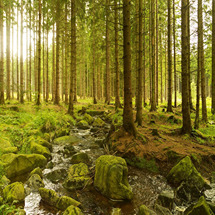
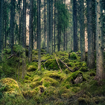
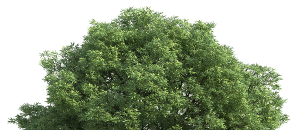

AR VR Experience
A forest is an area of land dominated by trees.Hundreds of definitions of forest are used throughout the world, incorporating factors such as tree density, tree height, land use, legal standing, and ecological function.
Forests are often home to many animal and plant species, and biomass per unit area is high compared to other vegetation communities.
Experience NowThe first known forests on Earth arose in the Late Devonian (approximately 380 million years ago), with the evolution of Archaeopteris, which was a plant that was both tree-like and fern-like, growing to 10 metres (33ft) in height. It quickly spread throughout the world, from the equator to subpolar latitudes and it formed the first forest by being the first species known to cast shade due to its fronds and by forming soil from its roots. Archaeopteris was deciduous, dropping its fronds onto the forest floor, the shade, soil, and forest duff from the dropped fronds creating the first forest.The shed organic matter altered the freshwater environment, slowing its flow and providing food. This promoted freshwater fish.
Let's Get Started
View In 3D →